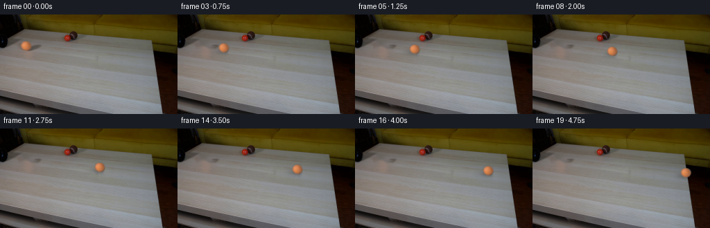
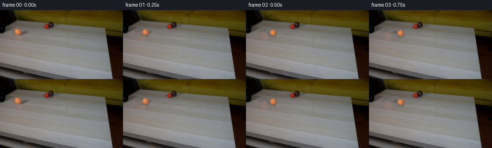

CODING AGENTS AS PIXEL WORLD MODELS
traex/DeepSeek-V4.1-Flash · 0012
点击播放 · 原生 RGB 像素
逐轮保存的候选
回放视频、检查图与代码变化。
每份候选均可单独播放。实际图片检查记录在下方工具轨迹中。
候选 01播放与检查图
点击播放 · 原生 RGB 像素


展开代码变化
--- 上一保存版本
+++ 本次保存版本
@@ -0,0 +1,133 @@
+from pathlib import Path
+
+import cv2
+import numpy as np
+from PIL import Image
+
+import artifact_io
+
+
+WIDTH = 256
+HEIGHT = 144
+FRAME_COUNT = 20
+
+
+def ellipse_alpha(cx, cy, rx, ry, feather=0.12):
+ yy, xx = np.mgrid[:HEIGHT, :WIDTH]
+ q = np.sqrt(((xx - cx) / rx) ** 2 + ((yy - cy) / ry) ** 2)
+ return np.clip((1.0 + feather - q) / feather, 0.0, 1.0)
+
+
+def recover_ball(source, background, center, radii):
+ cx, cy = center
+ rx, ry = radii
+ x0 = int(np.floor(cx - rx - 3))
+ y0 = int(np.floor(cy - ry - 3))
+ x1 = int(np.ceil(cx + rx + 3))
+ y1 = int(np.ceil(cy + ry + 3))
+
+ yy, xx = np.mgrid[y0:y1, x0:x1]
+ q = np.sqrt(((xx - cx) / rx) ** 2 + ((yy - cy) / ry) ** 2)
+ alpha = np.clip((1.055 - q) / 0.13, 0.0, 1.0)
+
+ foreground = source[y0:y1, x0:x1].astype(np.float32)
+ sprite = np.dstack([foreground, alpha * 255.0]).astype(np.uint8)
+ return sprite, (x0, y0, x1, y1)
+
+
+def make_background(source):
+ yy, xx = np.mgrid[:HEIGHT, :WIDTH]
+ ball = (((xx - 37.2) / 8.5) ** 2 + ((yy - 45.2) / 7.8) ** 2) <= 1.0
+ shadow = (((xx - 45.0) / 13.0) ** 2 + ((yy - 49.3) / 4.5) ** 2) <= 1.0
+ mask = cv2.dilate((ball | shadow).astype(np.uint8), np.ones((3, 3), np.uint8))
+ bgr = cv2.cvtColor(source, cv2.COLOR_RGB2BGR)
+ clean = cv2.inpaint(bgr, mask, 3.0, cv2.INPAINT_TELEA)
+ return cv2.cvtColor(clean, cv2.COLOR_BGR2RGB)
+
+
+def add_shadow(frame, cx, cy):
+ yy, xx = np.mgrid[:HEIGHT, :WIDTH]
+ dx = (xx - (cx + 3.0)) / 10.5
+ dy = (yy - (cy + 4.4)) / 3.25
+ wide = np.exp(-0.5 * (dx * dx + dy * dy))
+
+ dx = (xx - (cx + 0.9)) / 5.4
+ dy = (yy - (cy + 5.0)) / 1.7
+ contact = np.exp(-0.5 * (dx * dx + dy * dy))
+
+ opacity = 0.19 * wide + 0.09 * contact
+ opacity *= np.clip((cx + 8.0 - xx) / 5.0, 0.0, 1.0)
+ darkened = frame.astype(np.float32) * (1.0 - opacity[..., None])
+ return np.clip(darkened, 0, 255).astype(np.uint8)
+
+
+def paste_sprite(frame, sprite, center):
+ cx, cy = center
+ sh, sw = sprite.shape[:2]
+ pad = 4
+ x0 = int(np.floor(cx)) - sw // 2 - pad
+ y0 = int(np.floor(cy)) - sh // 2 - pad
+ x1 = x0 + sw + pad * 2
+ y1 = y0 + sh + pad * 2
+
+ canvas_x0 = max(0, x0)
+ canvas_y0 = max(0, y0)
+ canvas_x1 = min(WIDTH, x1)
+ canvas_y1 = min(HEIGHT, y1)
+ if canvas_x0 >= canvas_x1 or canvas_y0 >= canvas_y1:
+ return frame
+
+ yy, xx = np.mgrid[canvas_y0:canvas_y1, canvas_x0:canvas_x1].astype(np.float32)
+ map_x = xx - (cx - sw / 2.0)
+ map_y = yy - (cy - sh / 2.0)
+ rgba = cv2.remap(
+ sprite,
+ map_x,
+ map_y,
+ interpolation=cv2.INTER_LINEAR,
+ borderMode=cv2.BORDER_CONSTANT,
+ borderValue=(0, 0, 0, 0),
+ ).astype(np.float32)
+
+ alpha = rgba[..., 3:4] / 255.0
+ roi = frame[canvas_y0:canvas_y1, canvas_x0:canvas_x1].astype(np.float32)
+ composed = rgba[..., :3] * alpha + roi * (1.0 - alpha)
+ frame[canvas_y0:canvas_y1, canvas_x0:canvas_x1] = np.clip(
+ composed, 0, 255
+ ).astype(np.uint8)
+ return frame
+
+
+def generate():
+ case_dir = Path(__file__).resolve().parent
+ source = np.asarray(Image.open(case_dir / "first_frame.png").convert("RGB"))
+ if source.shape != (HEIGHT, WIDTH, 3):
+ raise ValueError(f"Unexpected first-frame shape: {source.shape}")
+
+ background = make_background(source)
+ sprite, _ = recover_ball(
+ source,
+ background,
+ center=(37.2, 45.2),
+ radii=(7.6, 7.0),
+ )
+
+ frames = np.empty((FRAME_COUNT, HEIGHT, WIDTH, 3), dtype=np.uint8)
+ frames[0] = source
+
+ start_x = 37.2
+ end_x = 220.5
+ slope = 0.102
+ for index in range(1, FRAME_COUNT):
+ progress = index / (FRAME_COUNT - 1)
+ cx = start_x + (end_x - start_x) * progress
+ cy = 45.2 + slope * (cx - start_x)
+ frame = add_shadow(background.copy(), cx, cy)
+ frames[index] = paste_sprite(frame, sprite, (cx, cy))
+
+ return frames
+
+
+if __name__ == "__main__":
+ output = generate()
+ artifact_io.save(output, Path(__file__).resolve().parent)
可观测工具轨迹
实际执行的命令与返回图片。
命令 1exit 0
/bin/bash -c "pwd && rg --files -g '"'!**/.git/**'"' | sed -n '1,200p'"
命令 2exit 0
/bin/bash -c "sed -n '1,240p' prompt.txt"
命令 3exit 0
/bin/bash -c "sed -n '1,280p' GENERATION_RULES.md"
命令 4exit 0
/bin/bash -c 'file first_frame.png && identify first_frame.png 2>/dev/null || true && git status --short'
命令 5exit 0
/bin/bash -c "sed -n '1,240p' artifact_io.py"
命令 6exit 0
/bin/bash -c "python - <<'PY' import importlib.util for m in ['numpy','PIL','cv2','scipy','imageio','matplotlib']: print(m, bool(importlib.util.find_spec(m))) PY"
命令 7exit 0
/bin/bash -c "python - <<'PY'
from PIL import Image
import numpy as np
im=Image.open('first_frame.png')
a=np.asarray(im)
print(im.mode, im.size, a.shape, a.dtype)
print('min max mean', a.min(axis=(0,1)), a.max(axis=(0,1)), a.mean(axis=(0,1)))
# dominant quantized colors
q=(a//16)*16
colors,cnt=np.unique(q.reshape(-1,3),axis=0,return_counts=True)
for i in np.argsort(cnt)[-20:][::-1]: print(tuple(colors[i]), int(cnt[i]))
PY"命令 8exit 0
/bin/bash -c "sed -n '1,260p' player_template.html"
命令 9exit 0
/bin/bash -c "python - <<'PY'
from PIL import Image
import numpy as np
from scipy import ndimage
im=np.asarray(Image.open('first_frame.png')).astype(np.int16)
# HSV via cv2
import cv2
hsv=cv2.cvtColor(im.astype(np.uint8),cv2.COLOR_RGB2HSV)
# color group stats
masks={
'black': im.max(2)<45,
'dark': im.max(2)<80,
'orange': (im[:,:,0]>110)&(im[:,:,0]>im[:,:,1]*1.25)&(im[:,:,1]>30)&(im[:,:,2]<100),
'red': (im[:,:,0]>90)&(im[:,:,0]>im[:,:,1]*1.5)&(im[:,:,1]<70),
'greenish': (im[:,:,1]>im[:,:,0]*1.05)&(im[:,:,1]>im[:,:,2]*1.05),
'wood': (im[:,:,0]>im[:,:,1]+10)&(im[:,:,1]>im[:,:,2]+15)&(im[:,:,0]>70),
}
for name,m in masks.items():
lab,n=ndimage.label(m)
sizes=np.bincount(lab.ravel())[1:]
comps=[]
for j in np.argsort(sizes)[-12:][::-1]:
if sizes[j]<8: continue
ys,xs=np.where(lab==j+1)
comps.append((int(sizes[j]),(int(xs.min()),int(ys.min()),int(xs.max()),int(ys.max())),(round(xs.mean(),1),round(ys.mean(),1)),tuple(im[ys,xs].mean(0).round(0).astype(int))))
print('\\n',name,'total',m.sum())
for c in comps: print(c)
PY"命令 10exit 0
/bin/bash -c "python - <<'PY'
from PIL import Image
import numpy as np
from sklearn.cluster import KMeans
im=np.asarray(Image.open('first_frame.png'))
# quantized 8x8 median-ish center sample and categories by nearest palette
palette=np.array([[235,232,220],[190,170,140],[130,105,75],[90,70,45],[45,40,35],[10,10,10],[190,110,60],[140,35,25],[100,100,100]])
# blocks 4x4 mean; print category letters
bs=4
chars=' .:-=+*#@O'
for y in range(0,144,bs):
row=''
for x in range(0,256,bs):
p=im[y:y+bs,x:x+bs].mean((0,1))
# ascii by luminance
lum=(p@np.array([.299,.587,.114]))
row+=chars[min(9,int(lum/256*10))]
print(f'{y:3d} '+row)
# category map 8x8 based orange/red/dark/light
print('COLORS')
for y in range(0,144,4):
row=''
for x in range(0,256,4):
p=im[y:y+4,x:x+4].mean((0,1)); r,g,b=p
if r>g*1.35 and r>b*1.7 and g>65: c='O'
elif r>g*1.5 and r>b*2 and g<70: c='R'
elif max(p)<40:c='k'
elif max(p)<75:c='d'
elif max(p)<120:c='s'
elif max(p)<170:c='w'
else:c='L'
row+=c
print(f'{y:3d} '+row)
PY"命令 11exit 0
/bin/bash -c "python - <<'PY'
from PIL import Image
import numpy as np
im=np.asarray(Image.open('first_frame.png')).astype(float)
# average color per 8x8 region in key object area, as RGB hex. Print at 8 px but color nearest category
palette={
'K':(15,12,9),'D':(55,48,40),'d':(85,75,62),'S':(115,105,88),'s':(145,135,112),'W':(175,165,145),'L':(205,195,175),'O':(180,115,65),'o':(140,80,40),'R':(130,40,25),'G':(100,105,95),'B':(90,90,105)}
for y in range(0,80,2):
row=''
for x in range(0,128,2):
p=im[y:y+2,x:x+2].mean((0,1))
best=min(palette,key=lambda k:np.linalg.norm(p-np.array(palette[k])))
row+=best
print(f'{y:3d} {row}')
print('x labels: '+''.join(str((x//10)%10) if x%10==0 else ' ' for x in range(0,128,2)))
PY"命令 12exit 0
/bin/bash -c "python - <<'PY'
from PIL import Image
import numpy as np
im=np.asarray(Image.open('first_frame.png'))
# downsample image to ascii, color emoji impossible; make compact table of mean RGB at selected areas
for y in range(0,144,8):
vals=[]
for x in range(0,256,8):
p=im[y:y+8,x:x+8].mean((0,1)).astype(int)
vals.append('%02x%02x%02x'%tuple(p))
print(f'{y:3d} '+' '.join(vals))
PY"命令 13exit 0
/bin/bash -c "python - <<'PY'
from PIL import Image
import numpy as np, cv2
im=np.asarray(Image.open('first_frame.png'))
# kmeans 12 colors
Z=im.reshape(-1,3).astype(np.float32)
crit=(cv2.TERM_CRITERIA_EPS+cv2.TERM_CRITERIA_MAX_ITER,50,.2)
_,lab,cent=cv2.kmeans(Z,14,None,crit,10,cv2.KMEANS_PP_CENTERS)
cent=cent.astype(int); lab=lab.reshape(144,256)
for k in np.argsort(cent.mean(1)):
m=lab==k; n=m.sum();
if not n: continue
# biggest component and bbox
num,cc,stats,centro=cv2.connectedComponentsWithStats(m.astype(np.uint8),8)
j=1+np.argmax(stats[1:,4]) if num>1 else 0
x,y,w,h,area=stats[j] if j else (0,0,0,0,0)
print(f'{k:2d} {tuple(cent[k])} n={n:5d} mean=({centro[j,0]:.1f},{centro[j,1]:.1f}) main bbox=({x},{y},{w},{h}) area={area}')
# print palette id grid every 4
chars='0123456789ABCD'
# order k sorted by luminance
order=np.argsort(cent.mean(1)); remap={k:i for i,k in enumerate(order)}
for y in range(0,144,4):
row=''
for x in range(0,256,4):
ids,c=np.unique(lab[y:y+4,x:x+4],return_counts=True)
row+=chars[remap[ids[np.argmax(c)]]]
print(f'{y:3d} {row}')
PY"命令 14exit 0
/bin/bash -c "python - <<'PY'
from PIL import Image
import numpy as np
im=np.asarray(Image.open('first_frame.png'))
# save grayscale and HSV channels as pngs in .tmp
from pathlib import Path
Path('.tmp').mkdir(exist_ok=True)
import cv2
for name,arr in [('gray',cv2.cvtColor(im,cv2.COLOR_RGB2GRAY)),('sat',cv2.cvtColor(im,cv2.COLOR_RGB2HSV)[:,:,1]),('val',cv2.cvtColor(im,cv2.COLOR_RGB2HSV)[:,:,2])]:
Image.fromarray(arr).save(f'.tmp/{name}.png')
# print horizontal profiles where orange ball and red ball. Orange likely x30-45 y39-52, red x93-100 y29-38
for name,box in [('orange',(25,35,50,58)),('red',(88,25,105,43)),('pipe',(95,18,125,42))]:
x0,y0,x1,y1=box; p=im[y0:y1,x0:x1]
print(name, 'bbox',box,'mean',p.mean((0,1)),'min',p.min((0,1)),'max',p.max((0,1)))
# rows stats
for y in range(y0,y1):
row=im[y,x0:x1]
mask=(row[:,0]>row[:,1]*1.2)&(row[:,0]>row[:,2]*1.3)
if mask.sum(): print(y, np.where(mask)[0][0]+x0, np.where(mask)[0][-1]+x0, row[mask].mean(0).astype(int))
PY"命令 15exit 0
/bin/bash -c "python - <<'PY'
from PIL import Image
import numpy as np
im=np.asarray(Image.open('first_frame.png')).astype(int)
# masks printed every 2 px for x 0..160, y0..70
masks={
'K':im.max(2)<35,
'D':im.max(2)<65,
'O':(im[:,:,0]>im[:,:,1]*1.28)&(im[:,:,0]>im[:,:,2]*1.5)&(im[:,:,0]>90),
'R':(im[:,:,0]>75)&(im[:,:,0]>im[:,:,1]*1.8)&(im[:,:,1]<60),
}
for name,m in masks.items():
print('\\n###',name)
for y in range(0,72,2):
row=''
for x in range(0,180,2):
row+= '#' if m[y:y+2,x:x+2].mean()>.35 else ' '
print(f'{y:2d} {row}')
PY"命令 16exit 0
/bin/bash -c "python - <<'PY'
from PIL import Image
import numpy as np
im=np.asarray(Image.open('first_frame.png'))
# crop objects upscaled nearest and save, for numeric later perhaps view via sixel unavailable. Output pixel RGB grid around orange
for y in range(36,54):
row=[]
for x in range(26,50):
p=im[y,x]
# classify exact colors / brightness
if p[0]>p[1]*1.2 and p[0]>p[2]*1.3: c='O'
elif p.max()<60:c='k'
elif p.mean()>180:c='L'
elif p.mean()>140:c='w'
elif p.mean()>110:c='s'
elif p.mean()>80:c='d'
else:c='.'
row.append(c)
print(f'{y:2d} '+''.join(row))
print(' '+''.join(str(x//10%10) for x in range(26,50)))
print(' '+''.join(str(x%10) for x in range(26,50)))
# pipe area
for y in range(18,42):
row=[]
for x in range(88,120):
p=im[y,x]
if p[0]>p[1]*1.35 and p[0]>p[2]*1.5:c='R'
elif p.max()<45:c='K'
elif p.max()<80:c='k'
elif p.mean()<110:c='d'
elif p.mean()<140:c='s'
elif p.mean()<175:c='w'
else:c='L'
row.append(c)
print(f'{y:2d} '+''.join(row))
print(' '+''.join(str(x//10%10) for x in range(88,120)))
print(' '+''.join(str(x%10) for x in range(88,120)))
PY"命令 17exit 1
/bin/bash -c "python - <<'PY'
from PIL import Image
import numpy as np
im=np.asarray(Image.open('first_frame.png'))
# inspect table region rows, approximate homography to estimate ground positions.
# object centers orange (37,45) radius ~7, red (97,33) radius ~5. find line y = .? x + c through bottoms?
for x,y in [(37,45),(97,33),(130,60),(150,80),(180,100),(220,120)]:
print(x,y,im[y,x])
# output quantile boundaries by y
for y in range(24,145,8):
row=im[y]
# find where x gradient/ color break
lum=row.mean(1)
print('y',y,'lums',[(x,round(lum[x],0)) for x in range(0,256,16)])
PY"命令 18exit 0
/bin/bash -c "python - <<'PY'
from PIL import Image
import numpy as np
im=np.asarray(Image.open('first_frame.png'))
# run-length encode row categories in region x70:140 y18:45
for y in range(18,45):
row=im[y,70:145]
# RGB values every 2 px
runs=[]; last=None; start=70
for i,p in enumerate(row):
x=70+i
r,g,b=map(int,p)
if max(p)<35:c='K'
elif max(p)<60:c='D'
elif r>g*1.5 and r>b*1.6:c='R'
elif r>g*1.2 and r>b*1.4:c='O'
elif max(p)<95:c='d'
elif max(p)<125:c='s'
elif max(p)<160:c='w'
else:c='L'
if c"'!=last:
if last is not None:runs.append((start,x-1,last))
start=x;last=c
runs.append((start,144,last))
print(y, '"' '.join(f'{a}-{b}{c}' for a,b,c in runs if b-a>=1))
PY"命令 19exit 0
/bin/bash -c "python - <<'PY'
from PIL import Image
import numpy as np
im=np.asarray(Image.open('first_frame.png'))
# object/background statistics and boundary pixel listing
for y in range(37,54):
print('y',y, [(x,tuple(im[y,x])) for x in range(26,52,2)])
PY"命令 20exit 0
/bin/bash -c "python - <<'PY'
from PIL import Image
import numpy as np
im=np.asarray(Image.open('first_frame.png')).astype(np.int16)
# coarse 2x2 mean maps with palette based on nearest medoid colors, print 128x72
pal=np.array([[10,8,5],[45,35,10],[70,55,5],[95,80,15],[95,88,82],[125,118,112],[150,145,140],[180,110,70],[150,55,35],[220,140,90],[30,20,15],[65,60,55]],float)
chars='0123456789AB'
for y in range(0,144,2):
row=''
for x in range(0,256,2):
p=im[y:y+2,x:x+2].mean((0,1))
d=((pal-p)**2).sum(1)
row+=chars[d.argmin()]
print(f'{y:03d} {row}')
print('palette')
for c,p in zip(chars,pal): print(c,tuple(p.astype(int)))
PY"命令 21exit 0
/bin/bash -c "python - <<'PY'
import cv2, numpy as np
from PIL import Image
im=np.asarray(Image.open('first_frame.png'))
g=cv2.cvtColor(im,cv2.COLOR_RGB2GRAY)
e=cv2.Canny(g,30,80)
lines=cv2.HoughLinesP(e,1,np.pi/180,threshold=20,minLineLength=25,maxLineGap=5)
print('lines',0 if lines is None else len(lines))
if lines is not None:
arr=[]
for l in lines[:,0]:
x1,y1,x2,y2=map(int,l); length=np.hypot(x2-x1,y2-y1); ang=np.degrees(np.arctan2(y2-y1,x2-x1))
arr.append((length,ang,(x1,y1,x2,y2)))
for z in sorted(arr,reverse=True)[:50]: print('len %.1f ang %.1f'%z[:2],z[2])
# gradient orientation hist coarse
gx=cv2.Sobel(g,cv2.CV_32F,1,0,ksize=3); gy=cv2.Sobel(g,cv2.CV_32F,0,1,ksize=3)
mag=np.hypot(gx,gy); ang=(np.degrees(np.arctan2(gy,gx))+180)%180
for y0,y1,x0,x1,name in [(0,48,0,256,'top'),(48,120,0,256,'mid'),(120,144,0,256,'bottom'),(24,110,0,180,'table-left'),(40,110,120,256,'table-right')]:
m=mag[y0:y1,x0:x1]; a=ang[y0:y1,x0:x1]
h=np.histogram(a,bins=np.arange(0,181,10),weights=m)[0]
print(name, [(i*10,int(h[i])) for i in np.argsort(h)[-6:][::-1]])
PY"命令 22exit 0
/bin/bash -c "python - <<'PY'
from PIL import Image
import numpy as np
im=np.asarray(Image.open('first_frame.png')).astype(float)
# estimate table motion direction from texture perspective. Local patch warps along candidate angles, score zero-mean SSIM-ish over table area.
g=im.mean(2)
# high pass
from scipy.ndimage import gaussian_filter
hp=g-gaussian_filter(g,2.0)
# autocorrelation normalized of table region: sample candidates via shifts
reg=(slice(55,105),slice(10,210)); h=hp[reg]; h=(h-h.mean())/(h.std()+1e-9)
for ang in [-20,-15,-10,-5,0,5,10,15,20]:
a=np.deg2rad(ang); dx=5*np.cos(a); dy=5*np.sin(a)
from scipy.ndimage import shift
s=shift(h,(dy,dx),order=1,mode='reflect')
print(ang, np.mean(h*s), np.mean(np.abs(h-s)))
# compute pairwise gradients / table direction along 10 deg line
PY"命令 23exit 0
/bin/bash -c "python - <<'PY'
from PIL import Image
import numpy as np
im=np.asarray(Image.open('first_frame.png')).astype(float)
# Recover ball alpha and shading by fitting ball color with smooth radial light; test shadow extents via local background
# Print 1px RGB row/column at orange center
for x in [32,34,36,38,40,42,44,46]:
print('x',x,[(y,tuple(im[y,x].astype(int))) for y in range(38,53)])
PY"命令 24exit 0
/bin/bash -c "python - <<'PY'
from PIL import Image
import numpy as np
im=np.asarray(Image.open('first_frame.png')).astype(float)
# Find bright/dark ball centers via circular templates? print hue/sat grid around orange and red as color classes
for name,(x0,y0,x1,y1) in {'orange':(24,34,52,58),'red':(88,22,108,44)}.items():
print(name)
for y in range(y0,y1):
row=''
for x in range(x0,x1):
r,g,b=im[y,x]
# nearest to base + shading by chromatic ratio
if r>g*1.4 and r>b*1.8 and g>60: c='O'
elif r>g*1.5 and r>b*1.6 and g>40:c='o'
elif r>g*1.8 and g<70:c='R'
elif max(r,g,b)<50:c='#'
elif max(r,g,b)<90:c='D'
elif max(r,g,b)<120:c='d'
elif max(r,g,b)<150:c='s'
else:c='.'
row+=c
print(f'{y:2d} {row}')
print(' '+''.join(str(x//10%10) for x in range(x0,x1)))
print(' '+''.join(str(x%10) for x in range(x0,x1)))
PY"命令 25exit 0
/bin/bash -c "python - <<'PY'
from PIL import Image
import numpy as np
im=np.asarray(Image.open('first_frame.png'))
# print exact orange region with hue classification using nearest shade
for y in range(36,55):
print(f'{y:2d}',end=' ')
for x in range(24,54):
r,g,b=im[y,x].astype(int)
# base orange ratio; classify red/orange/bg based saturation
sat=(max(r,g,b)-min(r,g,b))/(max(r,g,b)+1)
if sat>.28 and r>g*1.25:
if r>190:c='X'
elif r>170:c='x'
elif r>145:c='o'
else:c='r'
else:
if max(r,g,b)<90:c='K'
elif max(r,g,b)<120:c='D'
elif max(r,g,b)<145:c='s'
else:c='.'
print(c,end='')
print()
print(' '+''.join(str(x//10%10) for x in range(24,54)))
print(' '+''.join(str(x%10) for x in range(24,54)))
PY"命令 26exit 0
/bin/bash -c "python - <<'PY'
from PIL import Image
import numpy as np
im=np.asarray(Image.open('first_frame.png')).astype(int)
# masks with compact 2-char cells for x0:256 step2, y15:75 step1; show dark and color
for y in range(14,76):
row=''
for x in range(0,256,2):
p=im[y:y+1,x:x+2].mean((0,1)); r,g,b=p
if r>g*1.35 and r>b*1.55 and g>55:c='O'
elif r>g*1.5 and r>b*1.6 and g<65:c='R'
elif max(p)<40:c='#'
elif max(p)<70:c='d'
elif max(p)<100:c='s'
elif max(p)<135:c='w'
elif max(p)<175:c='L'
else:c='.'
row+=c
print(f'{y:02d} {row}')
print(' '+''.join(str((x//10)%10) if x%10==0 else ' ' for x in range(0,256,2)))
PY"命令 27exit 0
/bin/bash -c "python - <<'PY'
from PIL import Image
import numpy as np
im=np.asarray(Image.open('first_frame.png')).astype(float)
# linear relation y = m*x+b for table motion: estimate via homography from table grain; use line through ball center and vanishing point? Print projections and row/col features.
# estimate gradient along table top, color texture highpass autocorrelation at multiple patches, candidate dx/dy
from scipy.ndimage import gaussian_filter, shift
g=im.mean(2); hp=g-gaussian_filter(g,1.5)
for box in [(10,50,210,105),(20,60,220,110),(10,45,180,100),(30,55,220,120)]:
x0,y0,x1,y1=box; h=hp[y0:y1,x0:x1]; h=(h-h.mean())/(h.std()+1e-9)
best=[]
for ang in np.arange(-10,21,.5):
a=np.deg2rad(ang)
for d in [2,3,4,5,6,7,8]:
s=shift(h,(d*np.sin(a),d*np.cos(a)),order=1,mode='reflect')
score=np.mean(h*s)
best.append((score,ang,d))
print(box, sorted(best,reverse=True)[:8])
PY"命令 28exit 0
/bin/bash -c "python - <<'PY'
import cv2,numpy as np
from PIL import Image
im=np.asarray(Image.open('first_frame.png'))
g=cv2.cvtColor(im,cv2.COLOR_RGB2GRAY)
# line segment detector
lsd=cv2.createLineSegmentDetector(cv2.LSD_REFINE_STD)
lines=lsd.detect(g)[0]
arr=[]
if lines is not None:
for q in lines[:,0]:
x1,y1,x2,y2=q; L=np.hypot(x2-x1,y2-y1); a=np.degrees(np.arctan2(y2-y1,x2-x1))
if L>15: arr.append((L,a,(x1,y1,x2,y2)))
for L,a,q in sorted(arr,reverse=True)[:100]:
print(f'{L:6.1f} {a:6.1f}', tuple(round(v,1) for v in q))
PY"命令 29exit 0
/bin/bash -c "python - <<'PY'
from PIL import Image
import numpy as np
im=np.asarray(Image.open('first_frame.png')).astype(float)
# inspect exact horizontal/vertical profiles and edges around table
for y in [20,24,28,32,36,40,44,48,52,56,60,80,100,110,115,120,125,130,135,140,143]:
p=im[y].mean(1)
jumps=np.abs(np.diff(p)); idx=np.where(jumps>15)[0]
print(y,[(int(x),round(float(p[x]),1),round(float(p[x+1]),1)) for x in idx[:20]])
# scan right edge and left edge per row
for y in range(20,144,4):
p=im[y].mean(1); print(y,'left',next((x for x in range(256) if p[x]>25),None),'right',next((x for x in range(255,-1,-1) if p[x]>25),None))
PY"命令 30exit 0
/bin/bash -c "python - <<'PY'
from PIL import Image
import numpy as np
im=np.asarray(Image.open('first_frame.png')).astype(float)
# image dimensions, object masks using chromaticity, components, fit ellipses
import cv2
r,g,b=im[:,:,0],im[:,:,1],im[:,:,2]
for name,m in [
('orange',(r>g*1.3)&(r>b*1.45)&(g>50)&(r>120)),
('red',(r>g*1.6)&(r>b*1.5)&(g<80)&(r>70)),
('pipe_dark',(im.max(2)<75)),
('black',(im.max(2)<35))]:
m=(m.astype(np.uint8)*255)
num,labels,stats,cent=cv2.connectedComponentsWithStats(m,8)
print('\\n',name,num-1)
for i in range(1,num):
x,y,w,h,area=stats[i]
if area<20:continue
ys,xs=np.where(labels==i)
pts=np.column_stack([xs,ys]).astype(np.float32)
if len(pts)>=5: ell=cv2.fitEllipse(pts); print('area',area,'bbox',(x,y,w,h),'cent',cent[i],'ell',ell)
PY"命令 31exit 0
/bin/bash -c "python - <<'PY'
from PIL import Image
import numpy as np, cv2
from scipy import ndimage
from pathlib import Path
im=np.asarray(Image.open('first_frame.png'))
H,W=im.shape[:2]
# masks around original orange ball and shadow
cx,cy=37.2,45.3; rx,ry=8.1,7.2
Y,X=np.mgrid[:H,:W]
ball=((X-cx)/rx)**2+((Y-cy)/ry)**2 <= 1
# shadow extends right and below
sh=(((X-(cx+3.8))/12.0)**2+((Y-(cy+3.3))/5.0)**2<=1) & ~ball
mask=(ball|sh).astype(np.uint8)
# enlarge to cover anti-alias
mask=cv2.dilate(mask,np.ones((3,3),np.uint8),iterations=1)
bgr=cv2.cvtColor(im,cv2.COLOR_RGB2BGR)
for rad in [2,3,5,8]:
out=cv2.inpaint(bgr,mask,rad,cv2.INPAINT_TELEA)
out=cv2.cvtColor(out,cv2.COLOR_BGR2RGB)
Image.fromarray(out).save(f'.tmp/clean_inpaint{rad}.png')
# local stats
p=out[35:58,24:58].astype(float); q=im[35:58,24:58].astype(float)
print(rad,'local out mean/std',p.mean((0,1)),p.std((0,1)),'orig',q.mean((0,1)),q.std((0,1)))
# patch offset
for off in [28,32,36,40]:
out=im.copy()
ys,xs=np.where(mask>0)
srcx=xs+off
ok=srcx<W
out[ys[ok],xs[ok]]=im[ys[ok],srcx[ok]]
Image.fromarray(out).save(f'.tmp/clean_patch{off}.png')
print('patch',off,'diff from inp3',np.abs(out.astype(int)-cv2.cvtColor(cv2.inpaint(bgr,mask,3,cv2.INPAINT_TELEA),cv2.COLOR_BGR2RGB)).mean())
print('mask',mask.sum())
PY"命令 32exit 0
/bin/bash -c 'command -v ffmpeg || true; command -v convert || true; command -v chafa || true; command -v jp2 || true'
命令 33exit 0
/bin/bash -c "python - <<'PY'
from PIL import Image
import numpy as np
# terminal ANSI color map can inspect rough visual? print 40x22 half blocks using truecolor escapes
im=np.asarray(Image.open('first_frame.png'))
# not useful to tool but visually in raw may be output
for y in range(0,144,4):
s=''
for x in range(0,256,4):
p=im[y:y+4,x:x+4].mean((0,1)).astype(int)
s+=f'\\x1b[48;2;{p[0]};{p[1]};{p[2]}m '
s+='\\x1b[0m'
print(s)
PY"命令 34exit 0
/bin/bash -c "python - <<'PY'
from PIL import Image
import numpy as np
im=np.asarray(Image.open('first_frame.png')).astype(int)
# ascii 1px-ish x60:230 y12:60, chars by color classes hue
for y in range(12,60):
row=''
for x in range(60,230):
r,g,b=im[y,x]
if max(r,g,b)<25:c='#'
elif max(r,g,b)<45:c='K'
elif max(r,g,b)<70:c='D'
elif r>g*1.5 and r>b*1.5:c='R'
elif r>g*1.15 and r>b*1.4 and g<95:c='o'
elif abs(r-g)<8 and abs(g-b)<8:
if max(r,g,b)<90:c='d'
elif max(r,g,b)<115:c='s'
elif max(r,g,b)<140:c='w'
else:c='L'
elif r>g and g>b:c='y'
else:c='.'
row+=c
print(f'{y:02d} {row}')
print(' '+''.join(str((x//10)%10) if x%10==0 else ' ' for x in range(60,230)))
PY"命令 35exit 0
/bin/bash -c "python - <<'PY'
from PIL import Image
import numpy as np
im=np.asarray(Image.open('first_frame.png'))
# save selected crops scaled 8x nearest into .tmp for numeric shape understanding maybe OCR impossible
for name,box in {'orange':(20,30,60,60),'pipe':(80,16,140,48),'whole':(0,0,256,144)}.items():
c=Image.fromarray(im).crop(box)
c.resize((c.width*8,c.height*8),Image.Resampling.NEAREST).save(f'.tmp/{name}_crop.png')
# Print grayscale/color gradients in pipe area (base structure)
PY"命令 36exit 0
/bin/bash -c "python - <<'PY'
from PIL import Image
import numpy as np
im=np.asarray(Image.open('first_frame.png')).astype(float)
# fit orange ball radial intensity: print chroma hue and luminance normalized by max channel
for y in range(38,53):
vals=[]
for x in range(29,47):
r,g,b=im[y,x];
if r>g*1.25 and r>b*1.4: vals.append((x,round(r/255,2),round(g/r,2),round(b/r,2)))
print(y,vals)
PY"命令 37exit 0
/bin/bash -c "python - <<'PY'
from PIL import Image
import numpy as np
im=np.asarray(Image.open('first_frame.png')).astype(float)
# Try radial/ball model fitting: estimate circle center/radius and shading as polynomial in local coords. Print residual stats
from scipy.optimize import least_squares
Y,X=np.mgrid[:144,:256]
# manually ROI
roi=(X>=28)&(X<=46)&(Y>=38)&(Y<=52)
# chroma object mask
r,g,b=im[:,:,0],im[:,:,1],im[:,:,2]
obj=roi&(r>g*1.22)&(r>b*1.35)&(r>110)
# fit ellipse boundary from mask perhaps
ys,xs=np.where(obj)
print('n',len(xs),'bbox',xs.min(),xs.max(),ys.min(),ys.max(),'mean',xs.mean(),ys.mean())
# use pixel colors distribution by radius
cx,cy=36.7,45.1
for rad in np.arange(0,8,1):
m=obj&(np.abs(np.hypot(X-cx,Y-cy)-rad)<.5)
print(rad,m.sum(),im[m].mean(0) if m.sum() else None)
# shadow around x40-60 y47-55 inspect bg difference vs nearby row/col
for y in range(46,57):
print('row',y,[(x,tuple(im[y,x].astype(int))) for x in range(38,64,3)])
PY"命令 38exit 0
/bin/bash -c "python - <<'PY'
from PIL import Image
import numpy as np
im=np.asarray(Image.open('first_frame.png'))
# compute image texture distribution in table around orange to generate same-looking background; sample patches at same rows left/right
for y in [40,45,50,55,60,70,80,90,100]:
print(y,'std across',im[y,0:220].std(0),'neighbor diff',np.abs(np.diff(im[y,0:220].astype(int),axis=0)).mean(0))
# compare local background patches mean at x 0..220
for x in [0,10,20,60,80,100,120,140,160,180,200]:
p=im[50:80,max(0,x-5):x+5].astype(float)
print(x, p.mean((0,1)),p.std((0,1)))
PY"命令 39exit 1
/bin/bash -c 'python generate.py'
命令 40exit 0
/bin/bash -c "python generate.py && python - <<'PY'
from PIL import Image
import numpy as np
from pathlib import Path
src=np.asarray(Image.open('first_frame.png'))
frames=[np.asarray(Image.open(f'frames/{i:02d}.png')) for i in range(20)]
print('shape',np.stack(frames).shape,'first exact',np.array_equal(frames[0],src))
print('frame diffs from clean', [int(np.abs(frames[i].astype(int)-frames[i-1].astype(int)).sum()) for i in range(1,20)])
print('ball centroids',end=' ')
for i,f in enumerate(frames):
a=f.astype(int); r,g,b=a[:,:,0],a[:,:,1],a[:,:,2]
m=(r>g*1.28)&(r>b*1.45)&(g>55)&(r>110)
ys,xs=np.where(m)
print(f'{i}:({xs.mean():.1f},{ys.mean():.1f},{len(xs)})',end=' ')
print()
print('files',[(p.name,p.stat().st_size) for p in sorted(Path('.').glob('*')) if p.is_file()])
PY"保存候选 1 份；完成命令 40 次；可验证图片返回 0 张。原始 API 响应与完整日志保留在本地。